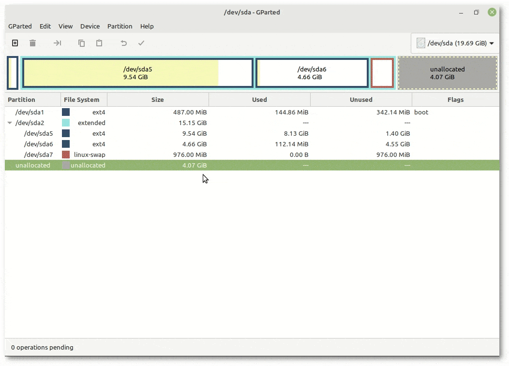

VOLVER AL INICIO
OBJETIVOS
Los objetivos de esta práctica son muy sencillos:
- Creación de la máquina virtual.
- Configuración de la máquina virtual.
- instalación de la aplicación GParted.
- Crear particiones con la aplicación GParted.
- Crear particiones mediante la instalación del Sistema Operativo.
